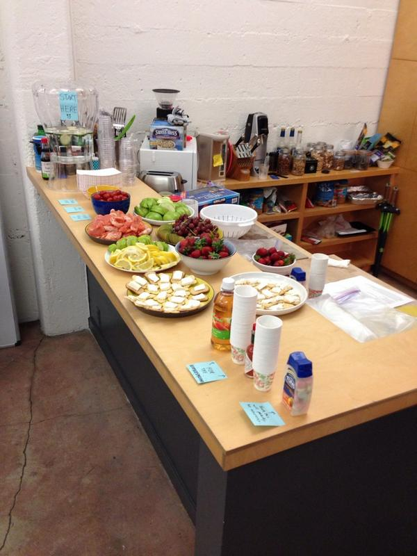
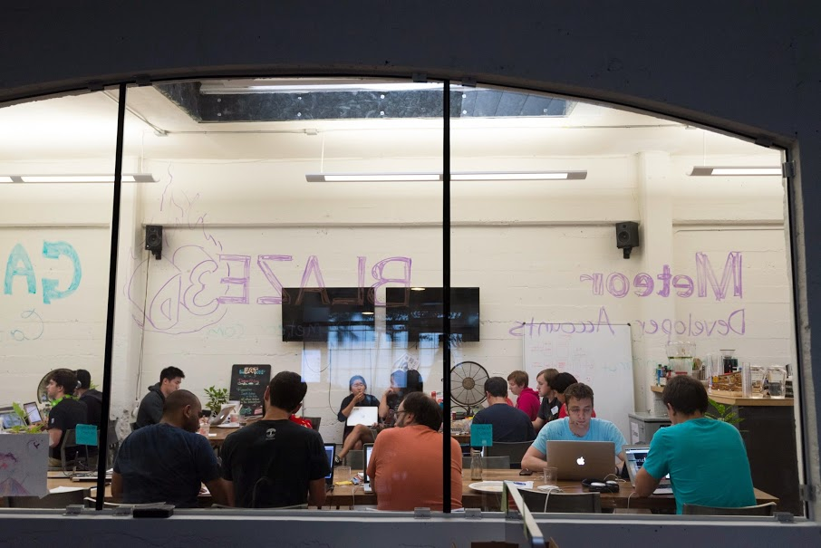
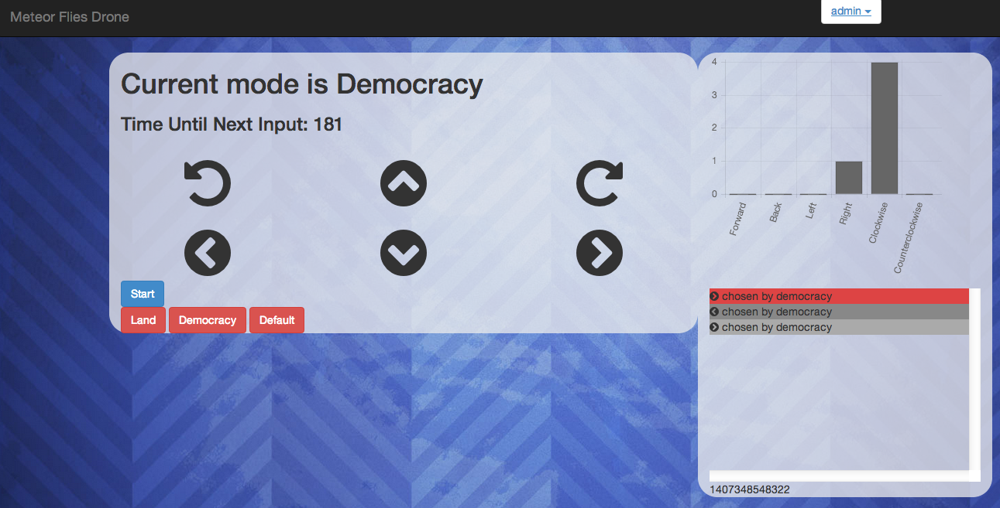
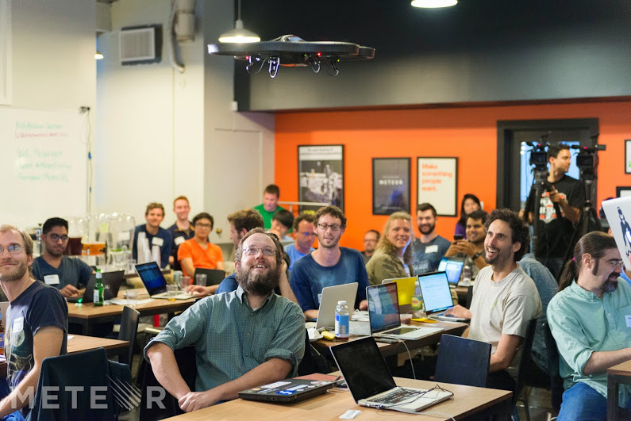

Meteor
A talk by Alex Fuhr
What is Meteor?
- A full-stack Javascript web framework
- Blaze Templating Engine (similar to Handlebars)
- MongoDB
- Node.js Backend
- Command-line Tools
- Packaging System
- Deploying Server (apps can be published at [appname].meteor.com)
- NOT REST-based like Express
Installation
curl https://install.meteor.com/ | sh
- No official Windows support. For unoffical Windows support, there is win.meteor.com
- You can also try Meteor in a browser at meteorpad.com
Command-Line Tools
- To create a new project:
meteor create [project name] - To run your application:
meteor - To go to the Mongo command line:
meteor mongo - To deploy to meteor.com:
meteor deploy [site name]
Meteor File Structure
- By default, Meteor has no file structure
- All Javascripts in the top directory are run on both server and client
- All HTML and CSS files are run on the client
- The
Meteor.isServerandMeteor.isClientmethods can be useful in this case. - For more complex apps, this can get annoying.
- All code in the
clientdirectory is only run on the client, and all code in theserverdirectory is only run on the server. - Other resources (like images) can go in the
publicdirectory where they can be accessed in HTML, CSS, and JS files. - Smart packages go into the
packagedirectory (we'll get to this later)
Meteor on the Client Side - Blaze
- As mentioned before, Blaze uses spacebars, which are very similar to handlebars
- Standard tags such as
{{#if [expression]}},{{else}},{{#each [array]}}are all available - These tags "react" to changes in a collection and other factors automatically
Meteor on the Client Side - Templates
- A template is defined by the tag
<template name="[name]"> - You can then use it in your HTML as
{{> [template name]}} - Templates can be nested within templates, giving your HTML a hierarchical structure.
- Variables used within templates are defined within your code.
Template.[template name].helperslets you define functions for each of the variables in your template.Template.[template name].[variable name]can also be used for just a single variable.- Events for templates (for example, a button click) are also defined in Javascript as
Template.[template name].events
Meteor on the Client Side - Packages
- Many popular client side libraries are available already as packages.
- When you add a packages, the packages CSS and JS are automatically included in your project.
- To add Bootstrap:
meteor add bootstrap - To search for a package:
meteor search [name] - You can also search Meteor packages at atmospherejs.com
Collections
- Meteor collections are stored on both the client (Minimongo) and server (Mongo) by default.
- To declare a new collection (typically done on both client and server):
People = new Mongo.Collection("people"); - Remember that this is NoSQL, so there is no such thing as a schema.
- Standard methods such as insert, find, delete, update, upsert exist for these collections.
Users
- Every Meteor application has a Users collection and API built in.
- The client can use
Meteor.user()orMeteor.userId()to get information about the user currently signed in, orMeteor.usersto get information about all users. - The
accounts-uipackage makes the user login process super easy. - First add
accounts-ui, then one or more ofaccounts-base,accounts-google,accounts-facebook,accounts-github, etc. - This adds the
loginButtonstemplate to your HTML. - When you click on the login buttons for the first time, you can configure 3rd party logins.
Meteor on the Server
- Meteor applications typically don't use very much server logic.
- Server side logic is necessary for several things:
- Access control of collections via publish
- Integration with npm packages
- Initial or periodic actions
Integrating NPM Packages
- Meteor allows use of npm packages by creating what's known as a "smart package".
- To start, create a packages directory and then a directory for your smart package inside this.
- Create a package.js file.
- The package.js should contain a description of the package with
Package.describe, anNpm.depends, andPackage.on_usethat adds other JS files to the package and exports variables. - Then do
meteor add [package name]and the exported variables should be available server-side.
Making Apps More Secure
- Obviously, full client access to collections is bad for security.
- Meteor comes with two packages by default, autopublish and insecure, that make for easier development but should not be used in production.
- Autopublish mirrors the server-side database to the client, and insecure allows the client to modify anything in the database.
- To make an app ready for production, simply remove these two packages.
Publish and Subscribe: The Secure Way of Managing Data
Meteor.Publishis used to make a certain subset of data available to the client (for example, only the currently logged in user's messages).Meteor.Subscribemust be used on the client to have access to these data subsets.- For modifying database info, you can then use
Meteor.methodson the server.
Adding Reactivity
- Meteor template functions automatically update when any collection is changed, but what if you want a non-collection element to be reactive?
- The Meteor Deps package allows for creating your own reactive data sources.
- To create a source, create an object with
Deps.Dependency, and call thedepend()function for get methods andchanged()function for set methods. Deps.autorunprovides a function that executes whenever a dependency is changed.
Routing
- Meteor by default isn't for single-page apps, thus it doesn't have any kind of routing built in.
- The
iron-routerpackage makes routing possible. - Using
Router.route, you can choose which templates to display with each route.
Advantages of Using Meteor
- Apps generally take very little time to create compared to other frameworks and with less files.
- With collection mirroring and built-in accounts, development is simple.
- Hot code push - you don't even have to refresh the page to see an update.
- Free deployment environment at meteor.com.
- PhoneGap support - Great for creating mobile apps.
Disadvantages of Using Meteor
- Still under heavy development
- Until the 1.0 release, each update brings drastic changes.
- Recent updates have temporarily broken some packages.
- Can put a lot of strain on the client.
- Only supports Mongo at the moment.
- A little effort has to be taken with each app to make it secure for production.
Meteor Hackathon
Meteor Hackathon
Meteor Hackathon
Meteor Hackathon

Meteor Hackathon
Meteor Hackathon
Additional Resources
- https://www.discovermeteor.com/blog - Articles about Meteor concepts
- http://crater.io - Meteor news
- Meteor Devshop SF - Once a month, all talks are live-streamed and posted online afterwards